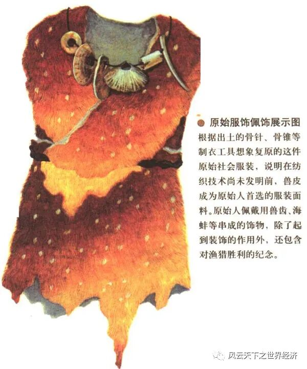
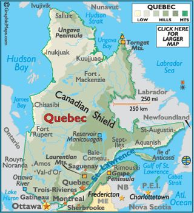

写下这些文字的是我《世界经济史》课堂上聪慧的同学们 ， 而这个系列早在2014年首次开课时就已预约。 八年后当她以如此风姿脱岫而出时， 我体会到了信念被兑付后的小欣喜。 深沉的经济史与年轻的思考在这里相遇， 激荡出灵动的弦歌， 以及渐次苏醒的思想。 为这个“小风云”系列， 我特意选了“总有人正年轻”这样一个名字。 其含义正如你所料， 这门课虽然以史为名， 但是我们真正寄予其中的是未来。 一万两千年世界经济史风云浩荡， 恰似过去留给我们的一个巨大谜面。 关于人类财富增长秘密的蛛丝马迹隐没其中， 等待年轻的他们去破解。 ——鲁晓东
- 圣经·创世纪
耶和华 神……又对亚当说：“你即听从妻子的话，吃了我所吩咐你不可吃的那树上的果子，地必为你的缘故受咒诅。你必终身劳苦，才能捕获得吃的。森林必给你长出狮子和老虎来，你也要吃树上的鸟雀。……”
……亚伯是打猎的，该隐是捕鱼的。有一日，该隐拿海里的出产为供物献给耶和华；亚伯也将他捕猎的羊的脂油献上。……
亚伯该隐向上帝献祭
- 《猎人日记》，约公元5世纪
这次出海的收益不少。两天时间就捕获了一箱大鱼，回镇上应该能卖不少钱，饭店老板最喜欢这样一大批的鲜货了，约克老板出价应该会最高，后天他的店门口就会有鲜鱼的标牌。
幸好我脑子聪明，没有继续在森林里耗着。听说其他人在城市附近也找不到多少大一点的猎物，只能打打鸟，打打兔子，勉勉强强够自己吃。我最后一次打猎，出门七天七夜，一路靠摘浆果和采蘑菇维生，离城得有一百里，才打死一只野猪。幸好至少还带回来一只野猪，不至于一无所获，靠卖这只野猪的钱我搞定了现在这艘船。不得不说木料相比起食物是真的便宜，之前带着两条鱼去看望老木匠，木匠还在考虑让他的儿子跟着我出海，听他说他儿子的新船已经快做好了。
裁缝也说最近好几天都收不到一张兽皮。十几年前我们给他一张损坏一点点的皮都会被他压价，现在连收到一张皮都困难。衣服越来越贵，我们出门都得小心，要是衣服被划破了可没什么好的材料补，更别说买新的。只能祈祷今年冬天不要太冷，不然衣服的价格还得涨。裁缝还说，前些天有几个人准备去西边买一批毛皮，希望他们不会被当做闯入者吃掉。

原始时期兽皮服装示意图
我应该可以再叫一些之前的同行来捕鱼吧。再出两次海，应该就能凑够换一条大船的钱，这样我可以带上几个同伴，出海可以更远一点……
- 北美百科全书，20世纪出版
魁北克市位于北美洲东北部，靠近五大湖的出海口，城市常住人口约8万人——仅次于上海市的9万人，位列世界第二大城市。

魁北克地图
作为北美地区最大的港口和商品集散地，魁北克通过水运周转五大湖周边上万平方公里区域内狩猎的动物和采集的浆果。同时，拉布拉多渔场也为魁北克带来大量的海洋鱼类食物，使得她可以维持较大的城市规模。魁北克最主要产业为食品加工业，其鱼肉片、咸鱼干等食品远销欧洲、南美等地，广受好评。
魁北克的第二大产业为造船业，凭借北方的大量优质木材和低廉的运输成本，魁北克造船厂可以制造全世界最大的船只，这赋予了魁北克商船队在远洋贸易中无与伦比的优势……
- 一次普通的谈话，22世纪
“爷爷，这是什么？”孩子摆弄着一个小玩意，上面有好多个数字按键，还有加减乘除符号。他从来没见过这样的东西。
“这是一部计算器，”爷爷一脸的慈祥：“爷爷年轻时候的东西，现在已经买不到了。最后一家计算器生产商倒闭的时候破产拍卖，但也花掉了爷爷当时一年的工资。”
“那要是正常价购买，是不是得爷爷当时十年的工资才能买得起一个计算器？”孩子显然对这个价格有些难以置信。虽然这个叫做计算器的东西看起来很厉害，但也不应该这么贵吧？而且它还这么小。
“是的，所以购买的基本都是公司或者学校。”爷爷说，“你想想，你要算一个数，如果那个数很大很大，而且还是乘法或者除法，你在算盘上得敲多少下才能得出结果？但爷爷用计算器，按几个键，结果就出来啦，很厉害吧！”
爷爷的眉毛似乎在飞舞：“这里面负责运算的芯片非常小，只有不到你两个手指头那样小。这叫集成电路，一小块集成电路板上可以有几万个晶体管，一秒钟内完成几十万次计算。这可不是人能达到的计算效率。”说着说着，爷爷的眼神暗了下去：“不过现在已经没有集成电路芯片生产厂了。”
计算器内部电路
孩子又一次由兴奋转向了疑惑。“为什么？”
“集成电路芯片的研发成本太高，虽然在研发完成之后的制造成本很低，但公司需要把研发费用摊到单个芯片的售价中。就算我们全世界每个人都买一个计算器，把平均成本拉到最低，价格也是远超绝大多数人的承受水平的。所以，这些集成电路厂商失去了民用市场，政府和学校没过多久也不再愿意投入高昂的研发成本，企业市场的容量不足以支撑这么尖端的技术研发，所以他们的研发进程停滞了，十年间一个接一个倒闭，现在没有后继者了。”
（全文图片来自网络）

**